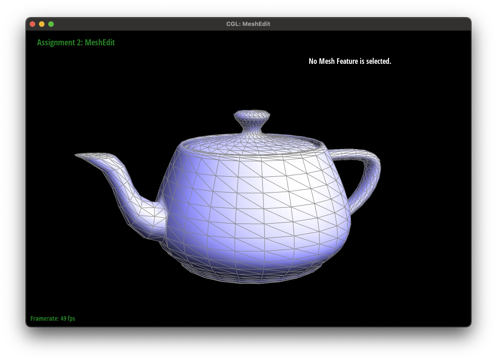

Overview
I have implemented a simple mesh editting algorithm in c++ in this project, starting with understanding different types of curve / surface representations (e.g. Bezier curves, Bezier surfaces and standard triangular meshes). The main challenge throughout this project was to accurately keep track of surface representatins, in relation to c++ pointers. For instance, in order to perform edge flip and split, it was indeed required to understand what elements of each mesh needs to be updated or added, and I have experienced that most bugs came from careless pointer modifications. Nevertheless, such experiences were helpful to deepen my understanding of mesh editting, and it was amazing to observe how a simple geometric mesh can construct a large-scale object.
Section I: Bezier Curves and Surfaces
Part 1: Bezier Curves with 1D de Casteljau Subdivision
Briefly explain de Casteljau's algorithm and how you implemented it in order to evaluate Bezier curves.The de Casteljau's algorithm is a recursive method to subdivide the current line segment with \(t\) as a hyperparameter. \(t\) ranges from \(0\) to \(1\), and the algorithm converges to a single point after \(N-1\) levels of subdivision processes for \(N\) keypoints. In the case of \(4\) control points, there will be \(3\) levels of subdivision, which is equivalent to \(6\) linear interpolation processes with \(t\).
Take a look at the provided .bzc files and create your own Bezier curve with 6 control points of your choosing. Use this Bezier curve for your screenshots below.I created a new .bzc file under '../bzc/curve3.bzc' which has \(6\) control points. Key points are shown below.
Part 2: Bezier Surfaces with Separable 1D de Casteljau
Briefly explain how de Casteljau algorithm extends to Bezier surfaces and how you implemented it in order to evaluate Bezier surfaces.When the Bezier surface patch is defined with \(4\times4\) control points grid, we can first compute \(4\) 1D Bezier curves along its horizontal axis of the grid using de Casteljau algorithm. To find the surface point \((u, v)\), we can first extract \(4\) points each from the computed 1D Bezier curves with \(u\) as the hyperparameter. Finally, these newly computed \(4\) points allow us to create a new Bezier curve, again with de Casteljau algorithm. Finally, finding a point on the new curve with \(v\) would provide us the surface point \(u,v\).
Show a screenshot of bez/teapot.bez (not .dae) evaluated by your implementation.
Section II: Triangle Meshes and Half-Edge Data Structure
Part 3: Area-Weighted Vertex Normals
Briefly explain how you implemented the area-weighted vertex normals.Given a vertex, I first extracted the set of triangles around the vertex by traversing the half-edges (with twin information). For each triangle, I computed the area with the \(3\) vertex coordinates, and also the normal vector with the cross product of the two vectors on the surface of the triangle. Finally, I computed the area-weighted average of the normal vectors of neighboring triangles, which will be the final output.
Show screenshots of dae/teapot.dae (not .bez) comparing teapot shading with and without vertex normals. Use Q to toggle default flat shading and Phong shading.|
|

|
Part 4: Edge Flip
Briefly explain how you implemented the edge flip operation and describe any interesting implementation / debugging tricks you have used.I have implemented my edge flip algorithm based on the illustration above: the edge \(bc\) is flipped to connect the vertices \(a\) and \(d\). I first collected the HalfEdgeIter instances for each half-edges (i.e. he_bc, he_cb, he_ac, he_ab, he_bd, he_dc) and updated them with the new pointer to their components. To debug my codes, I first created a map which takes an element address and outputs the convenient information. One example is to output the name of the vertices (e.g. \(AB\)) given the element address of a half-edge (e.g. he_ab). The memory address is not very intuitive, and I found it very hard to use when debugging.
Show screenshots of the teapot before and after some edge flips.

|
|
|
Part 5: Edge Split
Briefly explain how you implemented the edge split operation and describe any interesting implementation / debugging tricks you have used.I have implemented the edge split algorithm as the above illustration shows. 3 new edges (AM, CM, DM), 2 new faces (AMC, BMD), 6 halfedges (AM, MA, MC, MD, DM, MB) are created. The original halfedges (i.e. he_bc and he_cb marked as red and green arrows) still have the same vertices B and C respectively, which reduces the needed pointer updates for vertices.
Show screenshots of a mesh before and after some edge splits. Show screenshots of a mesh before and after a combination of both edge splits and edge flips.|
|
|
|
Part 6: Loop Subdivision for Mesh Upsampling
Briefly explain how you implemented the loop subdivision and describe any interesting implementation / debugging tricks you have used.The original half-edges (i.e. he_bc and he_cb shown as a red and green arrow) are updated as half-edges in the new mesh (i.e. he_bm and he_cm) while keeping the same vertices (i.e. \(b\) and \(c\)). Three new edges (i.e. AM, CM, DM) are created, and an old edge has been converted to represent an edge BM.
One main implementation trick that I used was that I labeled the edge CM as an old edge during the edge split process (edge names from the illustration). It makes sense to label two edges AM and DM as new edges, but the edge CM is actualy from the original edge CB, so I marked it as an old edge upon creation. This, of course, would cause an issue in iterating over the entire mesh as the number of old edges increases exponentially, so instead, upon the edge traversal (when flipping an edge during 4-1 subdivision), I only allowed the loop to occur at nEdges times, which prevents newly created CM edges marked as old edges to be skipped in the process.
Take some notes, as well as some screenshots, of your observations on how meshes behave after loop subdivision. What happens to sharp corners and edges? Can you reduce this effect by pre-splitting some edges?The sharp corners and edges will be smoothed as the subdivision level increases (shown in the figures above).
Load dae/cube.dae. Perform several iterations of loop subdivision on the cube. Notice that the cube becomes slightly asymmetric after repeated subdivisions. Can you pre-process the cube with edge flips and splits so that the cube subdivides symmetrically? Document these effects and explain why they occur. Also explain how your pre-processing helps alleviate the effects.The asymmetric behavior comes from the uneven vertex degrees of vertices in the mesh, so the simple modification of the original mesh to make sure every vertex has the exact same number of neighboring triangles would generate a symmetric output as shown below.

|
More in detail, the figures above show the mesh from one arbitrary angle, and by applying edge split to every diagonal edges, we recreate a mesh where each vertex has exactly 6 neighboring triangles (i.e. degree 6 vertex). As shown in the figures below, this would lead to a symmetric output shape.